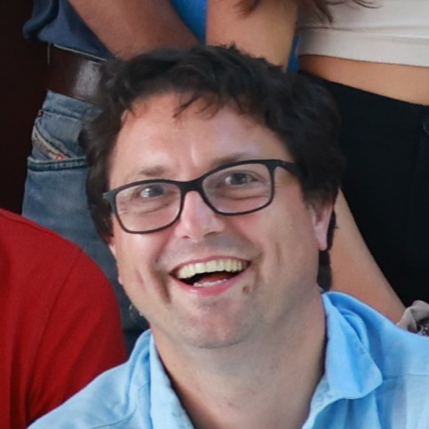
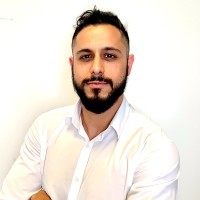

Staff
Meet our research team.

Prof. Francesco Braghin
Full professor of applied mechanicsHead of the Research Group. Expert in dildo dynamics and zucchini vibration analysis.
francesco.braghin@polimi.it.Prof. Gabriele Cazzulani
Associate professor of applied mechanicsExpert in dildo dynamics and zucchini vibration analysis.
gabriele.cazzulani@polimi.it.

Dr. Emanuele Riva
Junior Researcher (RTDa)Focused on vibration analysis, wave propagation and metamaterials.
emanuele.riva@polimi.it.Dr. Jacopo Marconi
Junior Researcher (RTDa)Focused on nonlinear dynamics, reduced order modelling and inertial MEMS.
jacopo.marconi@polimi.it.PhD Students

Matteo Pozzi
XXXVII cycleFocused on topology and parametric optimization in structural dynamics.
matteo1.pozzi@polimi.it.
Sebastiano Cominelli
XXXVII cycleFocused on optimization and optimal control, metameterials and acoustic cloaking.
sebastiano.cominelli@polimi.it.
Jonatha Santini
XXXVII cycleFocused on wave propagation in periodic structures, metasurfaces and MEMS.
jonatha.santini@polimi.it.
Giacomo Brambilla
XXXIX cycleFocused on optimal control applied to wave propagation in metamaterials and acoustics.
giacomo.brambilla@polimi.it.
Marco Verbicaro
XXXIX cycleFocused on optimal control applied to wave propagation in metamaterials and acoustics.
marco.verbicaro@polimi.it.